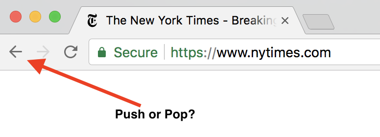

Stacks
Objectives
- Provide an overview of the stack ADT
- Examine uses of stacks
- Explore an array-based implementation of stacks
In Class Activity
Stack Interface
- Stack.java
Example Usage
Stack<String> stringStack = new
StackImpl<String>();
stringStack.push("Jim");
stringStack.push("Jess");
stringStack.push("Jill");
stringStack.push("Jane");
stringStack.push("Joe");
String top =
stringStack.peek(); //
returns "Joe"
System.out.println(top
+ " is at the top of the stack.");
top =
stringStack.pop(); //
removes and returns "Joe"
System.out.println(top
+ " is removed from the stack.");
top =
stringStack.peek(); //
returns "Jane"
System.out.println(top
+ " is at the top of the stack.");
top =
stringStack.pop(); //
removes and returns "Jane"
System.out.println(top
+ " is removed from the stack.");
After the following statements are performed, what string is at the
top of the stack? At the bottom of the stack?
Stack<String> stringStack = new
Stack<String>();
stringStack.push("Jim");
stringStack.push("Jess");
stringStack.pop();
stringStack.push("Jill");
stringStack.push("Jane");
stringStack.pop();
For obvious reasons, stacks are often referred to as a LIFO (Last-In-First-Out) data
structure.
Usage - Web Browser

Usage - Program Execution
When a program is running, a stack is used extensively, and it is an
important data structure for the representation of a running
program.
Consider the following (meaningless) generic program example:
void main()
{
someMethod(5, true, "hello");
}
void someMethod(int a,
boolean b, String c)
{
int v;
. .
.
v =
anotherMethod(a, b);
. .
.
}
int anotherMethod(int a,
boolean b)
{
if
(b)
return a * 2;
else
return a / 2;
}
Each method invocation is known as a stack frame, and these are pushed when a method is
called, and popped when we return from a method.
A stackframe contains (1) parameters, (2) local variables, and (3)
return values.
The concept of a stack is also helpful when understanding recursion:
void countdown(int n)
{
if
(n == 0)
return;
else
{
print n;
countdown(n - 1);
}
}
The stack frame stores the separate copies of the parameter n for each
method invocation.
Usage - Balance Checker
Imagine we have three types of delimiters: { }, ( ),
[ ]
{ ( [ ] ) } is balanced
{ ( [ ) ] } is unbalanced
Balance Checking Algorithm
- BalanceChecker.java
Usage - HTML Tags
HTML Tags must also balance, (for each opening tag, there must be a
closing tag)
<head>
<title>Stacks</title>
</head>
Usage - Infix and Postfix
Expressions
Infix
|
Postfix
|
x + y
|
x y +
|
(a + b) * c
|
a b + c *
|
a + b * c
|
a b c * +
|
w - x * y ^ z
|
w x y z ^ * -
|
a + (b - c) * d
|
|
x ^ y ^ z
|
|
Evaluating Postfix Expressions
Using a Stack
General Algorithm:
1. If operand, push.
2. If operator, pop top two operands, perform the operation, push
the result.
3. When you reach the end of the expression, the result is on top of
the stack. Pop the result.
The position of the two operands popped off of the stack does
matter! (Consider division or subtraction)
pop operand1
pop operand2
operand2 <operation> operand1
Evaluate the following postfix expressions:
3, 5, *, 8, +
2, 6, 5, 3, +, -, *
Converting Infix to Postfix
General Algorithm:
As your process the infix expression, take the following actions
Encounter
|
Action
|
| Operand |
Append each operand to the
end of the postfix output expression |
Operator ^
|
Push ^ onto the stack |
Operator +, -, *, /
|
Pop operators from the stack,
appending them to the postfix output expression, until the
stack is empty or its top entry has a lower precedence than
the new operator. Then push the new operator onto the stack.
|
Open
parenthesis
|
Push ( onto the stack. |
| Closed parenthesis |
Pop operators from the stack
and append them to the postfix output expression until an
open parenthesis is popped. Discard both parenthesis. |
When you reach the end of the infix expression, pop all operators
from the stack and append them to the postfix output string.
Convert the following infix expressions to postfix:
w + x * y / z
a + b * (c * (d - e)) / f